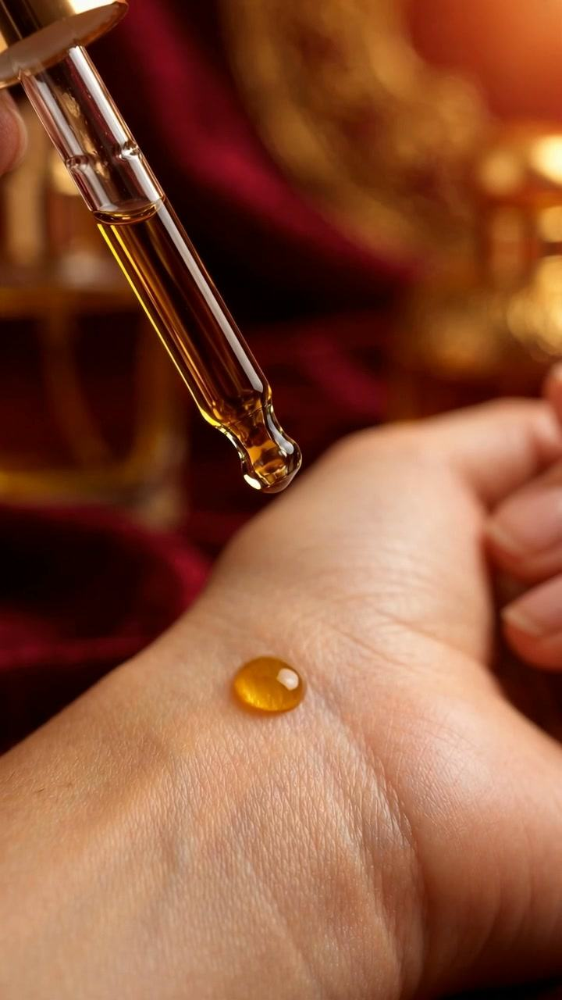

天然沉香精油的颜色从浅黄、金黄到深褐都有，具体看原料产区、油脂含量和蒸馏方式。同一批油颜色基本一致，但不同批次之间有深浅差异是正常的。
要警惕的是：颜色像墨汁一样漆黑，或者鲜艳得不自然；不同批次颜色分毫不差，像调出来的。颜色只能辅助判断，单看颜色定不了真假。
把瓶子轻轻倾斜，天然沉香精油比较黏稠，流动慢，会在瓶壁上留下一层薄薄的油膜，慢慢滑落。滴一滴在纸上，油点边缘清晰，不会像水一样迅速散开。
稀得像水、流动很快、完全不挂壁的，要怀疑掺了溶剂或基础油。但黏稠度也和蒸馏方式、温度有关，冬天稠、夏天稀，不能只看这一个指标。
在手腕内侧滴一点点，天然沉香精油的香韵会分层次出来：前调清凉、中调甜醇、尾调木香悠长，而且几个小时内香韵一直在变。留香时间长，几个小时后还能闻到尾调。
合成香精调出来的油香味单一，闻起来“很香”但没有变化，留香要么很快跑光，要么一直一个味道。带化学味、酒精味、刺鼻感的，直接警惕。
精油的检测一般是 GC-MS 成分分析，看特征成分谱。关键点是：报告上的批次号，必须和你手里这瓶的批次号一致。拿一批次的报告卖所有批次的油，等于没报告。
再看机构有没有 CMA 或 CNAS 资质，看报告上有没有具体的成分数据。只写“经检测为沉香精油”却没有任何数据的报告，参考价值很低。
掺基础油：用无味的植物油稀释，成本立刻降下来，香味变淡、挂壁变差。掺合成香精：用化学合成的沉香气味物质调香，闻起来像，但成分谱一测就露馅。
混便宜油：用低价产区或低油料的油冒充高价产区的油。这种最难分辨，只能靠成分检测和溯源。买之前问清原料产地和蒸馏方式，说不清的先别买。
原料是什么产区、什么年份的料？蒸馏方式是水蒸馏还是其他？这一批有没有检测报告，批次号能不能对上？
三件事都答得清楚的商家，基本靠谱；含糊其辞、只会说“保证纯天然”的，先别买。
| 检查项 | 正常表现 | 要警惕的表现 |
|---|---|---|
| 颜色 | 浅黄到深褐，批次间有差异 | 漆黑如墨，或鲜艳不自然 |
| 挂壁 | 黏稠流动慢，瓶壁留油膜 | 稀得像水，完全不挂壁 |
| 留香 | 有层次，几小时后仍有尾调 | 单一不变，或很快跑光 |
| 气味 | 清凉甜醇木香，层次分明 | 化学味、酒精味、刺鼻 |
| 报告 | 批次号与实物一致，有成分数据 | 一批报告卖所有批次，无数据 |